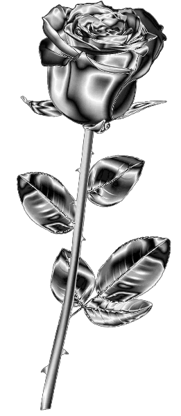

Do Whatever you want
When someone is in your life for a REASON, it is usually to meet a need you have expressed. They have come to assist you through a difficulty, to provide you with guidance and support, to aid you physically, emotionally, or spiritually. They are there for the reason you need them to be. Then, without any wrongdoing on your part, or at an inconvenient time, this person will say or do something to bring the relationship to an end. Sometimes they walk away. Sometimes they act up and force you to take a stand. Sometimes they die. What we must realize is that our need has been met,
our desire fulfilled, their work is done. Your need has been answered, and now it is time to move on.
On scroll
No looking back, only forward
Life hard. We should not give up hope. By the time we have given up, we are finhed. Chances are always there. We have to grab every single help, to love and to serve.
To live our life happier, full of joy, we have to set our goal and even dream big.If we choose the shortest path in life, we will never learn. To be or not to be, we have to be SOMEBODY. The fastest way to gain love to love others first!Do not hide your talent,
your knowledge and your beautiful heart. Go for your dream and live for it.
No cross, no crown